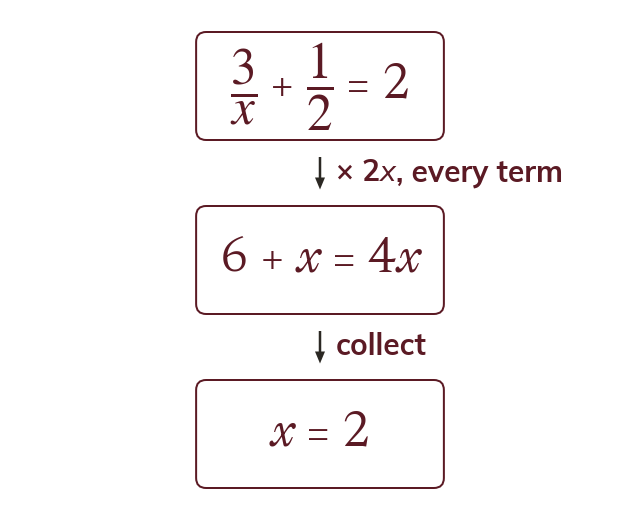
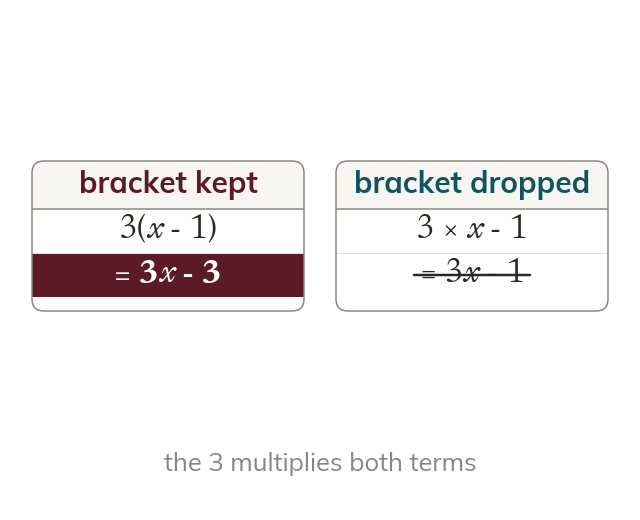
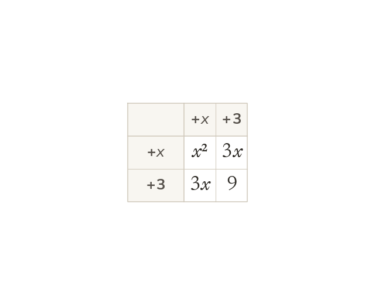
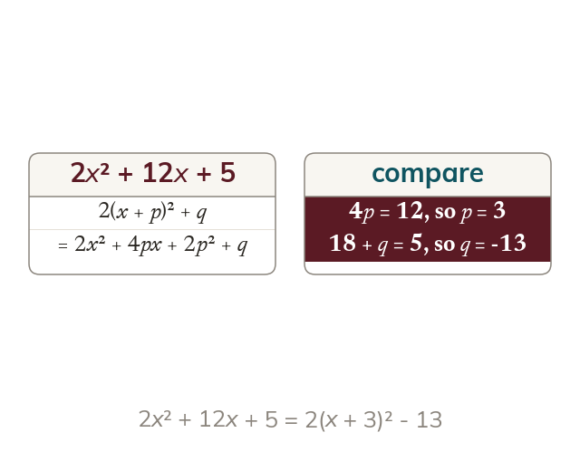

Clear every denominator
Every term is multiplied by the LCM of the denominators. A whole number on its own is multiplied too.
Clearing the fractions turns a frightening equation into an ordinary one, and completing the square rewrites any quadratic so its turning point can be read straight off - the form the next two chapters use to sketch a curve and to solve.
Work down the page at your own pace. Write every answer in your book first, then click to check it.
Read each card, then follow the worked examples one step at a time.

Every term is multiplied by the LCM of the denominators. A whole number on its own is multiplied too.

A numerator with two terms is bracketed when it is multiplied. So 3 × (x - 1) is 3x - 3.
Pick an answer. If it's wrong, the feedback tells you which mistake it was.
Section 2.4 Solving linear equations involving fractions (p38): equations with one or more algebraic fractions, including letters in the denominators.
Read each card, then follow the worked examples one step at a time.

The square completes as x² + bx = (x + b2)² - (b2)². For x² + 6x, the grid shows the extra 9 to take away.

Expanding a(x + p)² + q and comparing coefficients finds p and q. This works when a is not 1.
Pick an answer. If it's wrong, the feedback tells you which mistake it was.
Section 2.5 Completing the square (p39-41): unit and non-unit leading coefficients, and quadratics written in reverse order.
Finished? Next lesson: 3.1-3.2 Functions, Domain and Range.
Log in, then search for a code to practise that skill.